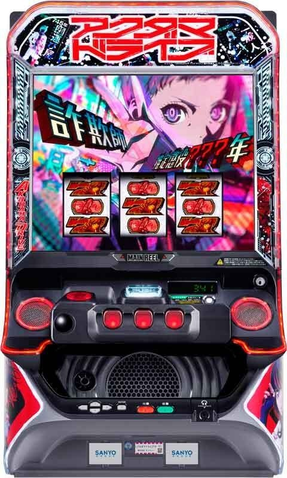
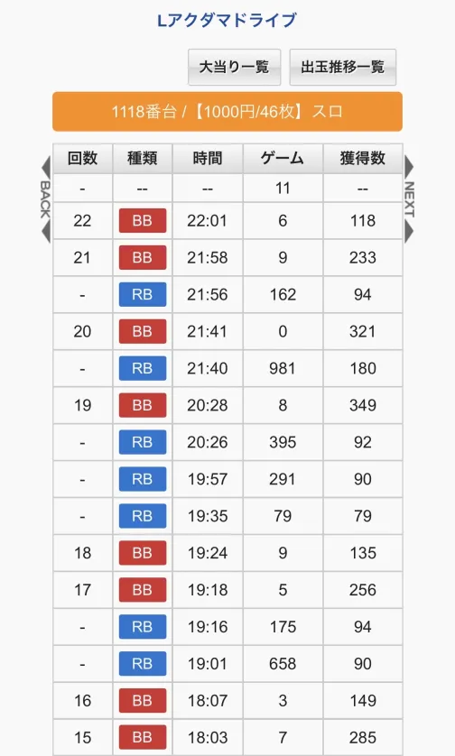
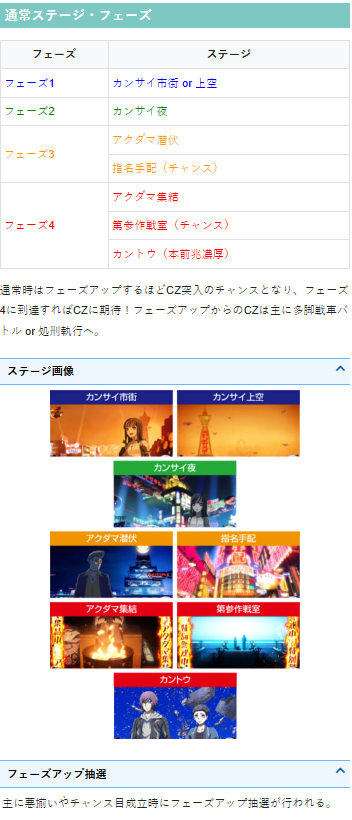
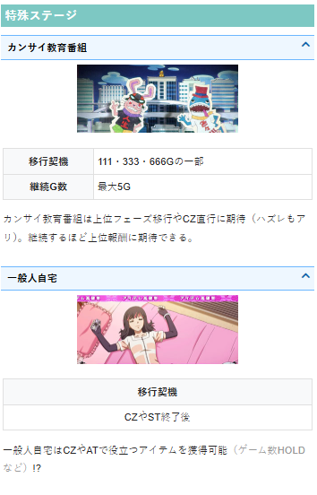
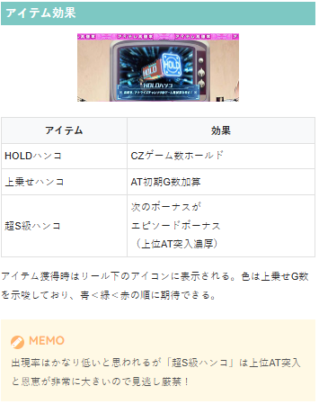
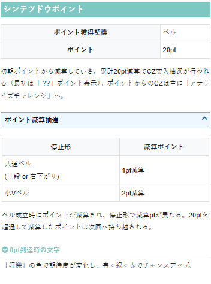
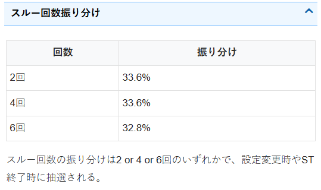
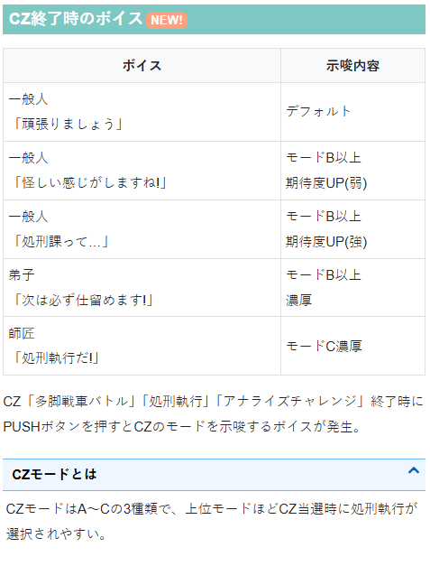

アクダマドライブ

【天井情報】
通常時を最大967G＋α消化でボーナスに当選。
745G以上ハマり後のボーナスでAT非突入時や、上位AT終了後は天井が589G＋αに短縮。
STからのAT非当選が最大6連続すると7回目のボーナスがエピソードボーナス（AT濃厚）となる。
【リセット判別】
不明
【有利区間について】
実戦上、エンディング（有利区間リセット）後は「超S級デッドオアアライブ」へ。
※スルー別で狙い目が変わる、ゾーンが強くゾーン抜け後に期待値が下がる、設置が少なくサンプル数が少ない。以上の点から暫くは狙い目が不安定になりそうです。
※9割が2スルーまでにAT当選するため、3スルー以降のサンプルがかなり少ない感じです。
狙い目
※液晶とデータ機はST分の9Gずれるため、745G以上ハマり後の短縮恩恵はデータ上754G（745+9）以上となる。（朝イチ除く）
【リセット狙い】
ボーナス間（0スルー）
400Gから
ゾーン狙い（0スルー）
111Gゾーン 70Gから
333Gゾーン 240Gから
※内部加算G数があると思われゾーン到達の有無がしっかり把握出来ない可能性あり。
※リセットは天井短縮無いが各ゾーン強くなる傾向？
スルー別
1スルー
前回754G以上ハマり後 200Gから
前回754G未満ハマり後 500Gから
2スルー
前回754G以上ハマり後 0Gから
前回754G未満ハマり後 50Gから（積極派は0Gから）
3スルー
前回754G以上ハマり後 0Gから
前回754G未満ハマり後 200Gから
4スルー
AT当選まで
【スルー別ゲーム数天井狙い】
0スルー
下位AT後 550Gから
上位AT後 260Gから
※AT7連以上で上位AT突入していると思われる。設定変更後は5連以上。（AT終了後、処刑課バトルに移行するため、この連数以上連荘してれば上位AT突入していると判断出来る）
1スルー
前回754G以上ハマり後 0Gから
前回754G未満ハマり後 550Gから
2スルー
前回754G以上ハマり後 0Gから
前回754G未満ハマり後 50Gから（積極派0Gから）
3スルー
前回754G以上ハマり後 0Gから
前回754G未満ハマり後 200Gから
4スルー以降
AT当選まで
【ゾーン狙い】
111G、333G、666Gゾーンが強め。規定ゲーム数到達後、数ゲーム消化して、カンサイ教育番組に移行したら消化。移行しなかったらやめ。ゲーム数は液晶のゲーム数を確認。
111Gゾーン
90Gから
333Gゾーン
270Gから
666Gゾーン
550Gから
【シンテツドウポイント】
残り2ptから
【示唆関連の押し引きについて】
通常ステージ・フェーズ
フェーズ3.4 フェーズが転落するまで
CZ失敗時のボイス
「処刑執行だ」 CZ当選まで（モードC以上濃厚のため）
アイテム
HOLDハンコ（赤） CZ当選まで
上乗せハンコ（赤）AT当選まで
超S級ハンコ AT当選まで
【有利区間関連狙い】
不明
やめ時
AT後もボーナス後も続行する要素が無ければやめ
その他
データ履歴
RBがボーナス。90枚前後はアクダマボーナスと思われる。169枚前後ならエピソードボーナスでAT直行している。アクダマボーナス後はAT期待度50％のSTへ突入し、失敗すればスルーという扱い。
BBはAT。

通常ステージ・フェーズ

特殊ステージ（カンサイ教育番組、一般人自宅）

アイテム効果

シンテツドウポイント

スルー回数振り分け

CZ終了時のボイス

参考元
かめとうさぎのパチスロブログ
基本情報
- メーカー: サンスリー
- 機械割: 97.4% 〜 112.0%
- 導入開始日: 2026年04月06日（月）
- ゲーム性概要: ●レア役やシンテツドウポイント（ベル揃いで減算）契機でCZに当選 ●CZは3種類あり成功すればボーナス ●アクダマボーナス後はSTへ、エピソードボーナスはATへ直行 ●STは9G継続で、全役でATを抽選。AT期待度は約50% ●ATは純増約7.1枚、初期ゲーム数は30Gのゲーム数上乗せ型（2連目以降は初期20G） ●AT終了後は必ずSTへ復帰 ●STの一部で突入する「処刑課バトル」成功で特化ゾーン＋上位AT濃厚


打ち方
打ち方・小役
打ち方（小役狙い）
「最初に狙う絵柄」 通常時は基本的にフリー打ちでOK。
「レア役の停止例」
「2択チャレンジ」 おもにCZ・AT中に発生。第3停止時に赤7or青7を狙って、アクダマ目（青7or赤7のサンド目）が停止すれば正解。 アクダマ目停止時は、CZ中ならボーナス、AT中はゲーム数上乗せを獲得できる。
［2択履歴チェック］ 2択チャレンジ発生時にPUSHボタンを押すと、過去10回分のアクダマ目の傾向を確認可能だ。
変則押しはNG
ナビなし時は左リール第1停止での消化を推奨する。
確定役
運命揃いの恩恵
運命揃い（1/7281.8）は成立した状況に応じて、強力な恩恵を獲得できる。
運命揃いの恩恵
| 状態 | 恩恵 |
|---|---|
| 通常時 | 運命チャンス当選 |
| CZ中 | エピソードボーナス＋上位AT |
| アクダマボーナス中 | 1回目：AT当選 2回目：極悪ドライブ当選 |
| エピソードボーナス中 | 極悪ドライブ当選 |
| （上位）ST中 | 上位AT当選＋ゲーム数上乗せ |
| （上位）AT中 | ゲーム数上乗せ |
| 処刑課バトル中 | 上位AT当選＋ゲーム数上乗せ |
| （超）極悪ドライブ | ゲーム数上乗せ |
解析情報通常時
小役関連
小役確率
| 役 | 確率 |
|---|---|
| 悪揃い | 1/8.0 |
| 共通ベル | 1/14.6 |
| 小Vベル | 1/99.9 |
| チャンス目 | 1/239.2 |
| 運命揃い | 1/7281.8 |
| アクダマ目 | 1/5.9 （2択チャレンジが発生する状態での確率） |
※共通ベル…上段or右下がりベル
モード
CZモード
［CZ種別に影響する3つのモード］ フェーズ契機のCZ当選時の種別（多脚戦車バトルor処刑執行）を決定するCZモードが存在。CZモードはA〜Cの3種類で、上位モードほど処刑執行に当選しやすい。
多脚戦車バトル終了時・CZモード昇格率
| 設定 | 当選率 |
|---|---|
| 1 | 39.84% |
| 2 | 42.97% |
| 3 | 48.44% |
| 4 | 54.69% |
| 5 | 66.41% |
| 6 | 75.00% |
※昇格は1段階ずつ、モードC時は昇格抽選ナシ
多脚戦車バトルに失敗した場合、CZモードの昇格が抽選される。
処刑執終了時＆ST終了時・CZモード振り分け
| モード | 振り分け |
|---|---|
| モードA | 89.84% |
| モードB | 9.38% |
| モードC | 0.78% |
処刑執行終了時とST終了時に、初期のCZモードを抽選する。
シンテツドウポイント
ベル入賞時にリール右に表示されたポイントを減算していき、0ptになるとCZ「アナライズチャレンジ」を抽選。 初期ポイントは20ptで、上段ベルと右下がりベルは1pt、小Vベルは2ptが減算される。朝イチ（設定変更時・電源OFF/ON時）は??で隠れた状態からスタートする。
シンテツドウポイント
| 減算契機 | 上段ベルと右下がりベルは1pt、小Vベルは2pt |
|---|---|
| 初期ポイント | 20pt |
| 20pt減算時 | CZ（アナライズチャレンジ）を抽選 |
| 備考 | 20ptを超えた分は次回へ持ち越し |
20ptを超えた分は次回へ持ち越される。
「0pt到達時の好機の文字色」 青＜緑＜赤の順にCZ当選に期待できる。
フェーズ
フェーズ解説
通常時はおもに悪揃いやチャンス目でフェーズの昇格を抽選していて、フェーズ（ステージ）が上がるほどCZ当選期待度がアップ。 フェーズはリール左に1〜3まで表示されていて、フェーズ4ではCZの前兆ステージへ移行する。
フェーズと滞在ステージ
| フェーズ | ステージ |
|---|---|
| フェーズ1 | カンサイ市街orカンサイ上空 |
| フェーズ2 | カンサイ夜 |
| フェーズ3 | アクダマ潜伏＜指名手配 |
| フェーズ4 | アクダマ集結＜第参作戦室＜カントウ（CZ以上濃厚） |
各フェーズの継続ゲーム数
| フェーズ | ゲーム数 |
|---|---|
| フェーズ1 | ー |
| フェーズ2 | 20～23G |
| フェーズ3 | 15～18G |
| フェーズ4（小役契機） | 16～24G |
| フェーズ4（小役契機以外） | 11～24G |
※各フェーズの規定ゲーム消化後はフェーズ1に転落（フェーズ4の本前兆時はCZへ）
フェーズ4移行契機が小役orカンサイ教育番組経由で継続ゲーム数が変化。小役契機の場合は最低16Gと長くなる。
小役契機・フェーズ4の継続ゲーム数振り分け
| ゲーム数 | 本前兆以外 | 本前兆 |
|---|---|---|
| 16G | ー | 5.47% |
| 18G | ー | 5.47% |
| 20G | 2.34% | 14.84% |
| 22G | 97.66% | 68.75% |
| 24G | ー | 5.47% |
フェーズ4へ移行したタイミングでCZやボーナスの当否を抽選。漏れた場合はフェーズ4中の悪揃いやレア役でCZ・ボーナス抽選がおこなわれる。 フェーズ4移行時にCZの本前兆だった場合、前兆中はボーナスへの昇格を抽選する。
［フェーズ1滞在時］フェーズ2移行率
| 役 | 移行率 |
|---|---|
| 悪揃い | 12.50% |
| チャンス目 | 100% |
［フェーズ2滞在時］フェーズ3移行率
| 役 | アクダマ潜伏へ | 指名手配へ |
|---|---|---|
| 悪揃い | 22.66% | 2.34% |
| チャンス目 | 50.00% | 50.00% |
成立役に応じて1段階上のフェーズへの昇格を抽選。 この抽選とは別に、どのフェーズにいてもフェーズ4（前兆）への直行抽選がおこなわれる。
フェーズ4移行率
| 滞在フェーズ | 悪揃い | チャンス目 |
|---|---|---|
| フェーズ1 | ー | 50.00% |
| フェーズ2 | ー | 67.19% |
| フェーズ3 | 50.00% | 100% |
アナライズチャレンジの前兆中・フェーズ4移行率
| 役 | 移行率 |
|---|---|
| 悪揃い | 0.78% |
| チャンス目 | 12.50% |
アナライズチャレンジの前兆中（シンテツドウポイント20pt獲得後）の悪揃いやレア役では、フェーズ4への移行が抽選される。
CZ
CZ合算確率
| 設定 | 確率 |
|---|---|
| 1 | 1/166.1 |
| 2 | 1/165.3 |
| 3 | 1/163.8 |
| 4 | 1/159.3 |
| 5 | 1/154.8 |
| 6 | 1/152.1 |
多脚戦車バトル
前半では成立役に応じて後半のゲーム数獲得を抽選。後半でアクダマ目が止まればボーナス当選となる。
多脚戦車バトル性能
| 当選契機 | 通常時（フェーズごと）の抽選、 カンサイ教育番組の一部 |
|---|---|
| 継続ゲーム数 | 前半：10G、後半：前半で獲得した分 |
| 前半中の抽選 | 後半のゲーム数獲得抽選 （20G以上獲得時はボーナス濃厚） |
| 後半中の抽選 | アクダマ目が止まればボーナス |
| アクダマ目確率 | 1/5.9（2択チャレンジ発生確率） |
| 成功期待度 | 約46% |
「前半」 獲得したゲーム数は液晶右上に表示。 アイテム「HOLDハンコ」を持っている場合は一定ゲーム数間、前半のゲーム数減算がストップする。
［前半パート］後半パートの獲得ゲーム数振り分け
| ゲーム数 | その他 | ベル | 悪揃い | チャンス目 |
|---|---|---|---|---|
| 非当選 | 81.09% | 35.15% | ー | ー |
| 1G | 17.64% | 51.61% | 51.96% | ー |
| 2G | 1.09% | 10.67% | 34.36% | ー |
| 3G | 0.16% | 2.21% | 10.76% | 11.97% |
| 4G | 0.02% | 0.34% | 2.56% | 10.72% |
| 5G | 0.0001% | 0.02% | 0.32% | 38.04% |
| 6G | ー | 0.0005% | 0.04% | 32.96% |
| 7G | ー | ー | 0.002% | 5.29% |
| 8G | ー | ー | ー | 0.99% |
| 9G | ー | ー | ー | 0.04% |
※運命揃いはエピソードボーナス＋上位AT濃厚
「後半」 前半で獲得したゲーム数分継続。 2択チャレンジでアクダマ目が止まればボーナス濃厚だ。
［後半パート］成立役ごとの抽選内容
| 役 | 内容 |
|---|---|
| 下記以外 | ハズレ |
| 押し順アクダマ目 | 2択チャレンジ発生 （正解がナビされる可能性あり） |
| 悪揃い | ゲーム数の減算ナシ |
| チャンス目 | 勝利濃厚 |
| 運命揃い | エピソードボーナス＋上位AT濃厚 |
ボーナス当選時は、残った処刑執行ゲーム数を参照してボーナス種別の昇格を抽選。 昇格順はアクダマボーナス＜エピソードボーナス＜エピソードボーナス＋極悪ドライブの順で、残りゲーム数が多いほど昇格に期待できる（昇格当選時はボーナス種別が1段階昇格）。
処刑執行
毎ゲームボーナス抽選をおこなう高期待度CZ。悪揃いでチャンス、チャンス目はボーナス濃厚だ。
処刑執行性能
| 当選契機 | 通常時（フェーズごと）の抽選、 カンサイ教育番組の一部 |
|---|---|
| 継続ゲーム数 | 10G＋α |
| 消化中の抽選 | 全役でボーナスを抽選 （悪揃いはチャンス、チャンス目はボーナス濃厚） |
| 成功期待度 | 約88% |
アイテム「HOLDハンコ」を持っている場合は一定ゲーム数間、ゲーム数の減算がストップ。
「演出発生でチャンス」 開眼成功でボーナス！
ボーナス当選率
| 役 | 当選率 |
|---|---|
| 下記以外 | 10.16% |
| 悪揃い | 33.59% |
| チャンス目 | 100% |
| 運命揃い | 100% （エピソードボーナス＋上位AT濃厚） |
アナライズチャレンジ
シンテツドウポイントを契機に突入するCZ。 前半でカイセキランクを上げていき、後半でカイセキランクを参照したボーナス抽選をおこなう。
アナライズチャレンジ性能
| 当選契機 | シンテツドウポイント20pt減算時の抽選 |
|---|---|
| 継続ゲーム数 | 前半15G＋後半5G |
| 前半中の抽選 | カイセキランクアップ抽選 |
| 後半中の抽選 | カイセキランクごとのボーナス抽選 |
| 成功期待度 | 約59% |
アイテム「HOLDハンコ」あり時は、ゲーム数の減算がストップする。
「カイセキランク」
カイセキランク
| ランク | 期待度 |
|---|---|
| 1/15 | 低 |
| 1/10 | ↓ |
| 1/7.5 | ↓ |
| 1/5 | ↓ |
| 1/4 | ↓ |
| 1/2.5 | 高 |
| 1/1 | ボーナス濃厚 |
保障として1段階はランクが上がるので、後半は最低でも1/10でボーナスが抽選される。
カイセキランクアップ当選率
| ランク | その他 | 悪揃い | チャンス目 |
|---|---|---|---|
| 非当選 | 97.45% | 45.11% | ー |
| 1ランクアップ | 2.53% | 53.91% | 93.31% |
| 2ランクアップ | 0.02% | 0.92% | 6.10% |
| 3ランクアップ | 0.002% | 0.06% | 0.51% |
| 4ランクアップ | 0.0001% | 0.005% | 0.08% |
| 5ランクアップ | 0.000001% | 0.0002% | 0.002% |
| 6ランクアップ | ー | 0.000001% | ー |
カイセキランクが1/1に到達でボーナス濃厚。1/1に到達した後はエピソードボーナスへの昇格を抽選する。
「後半」 前半で上げたカイセキランクでボーナスを抽選！
成功期待度序列
| 役 | 期待度序列 |
|---|---|
| 下記以外（※） | 低 |
| ベル（※） | 中 |
| 悪揃い（※） | 高 |
| チャンス目 | 成功濃厚 |
| 運命揃い | エピソードボーナス＋上位AT濃厚 |
※期待度はカイセキランクによって変化
運命チャンス
通常時の運命揃いで突入する特殊CZ。 突入した時点でアクダマボーナス以上濃厚で、5G以内にランクアップに成功すれば恩恵がエピソードボーナスに昇格＆5Gが再セットされる。次の5Gで再びランクアップに成功すると上位AT（エピソードボーナス経由）突入濃厚だ。
運命チャンス性能
| 当選契機 | 通常時の運命揃い後 |
|---|---|
| 継続ゲーム数 | 5GのST型 |
| 消化中の抽選 | ランクアップ抽選（最大2回まで） |
| アクダマ目確率 | 1/5.9 |
| 失敗 | アクダマボーナスへ |
| 1回成功 | エピソードボーナス＋ATへ |
| 2回成功 | エピソードボーナス＋上位ATへ |
ランクアップ当選率
| 役 | 1段階アップ | 2段階アップ |
|---|---|---|
| アクダマ目 | 100% | ー |
| 悪揃い | 6.25% | ー |
| チャンス目 | 99.22% | 0.78% |
| 運命揃い | ー | 100% |
「ランクアップ」 2択チャレンジ時にアクダマ目停止でランクアップ濃厚。 ランクアップ抽選は悪揃いなどでもおこなわれる。
フェーズ経由のCZ当選時・CZ種別振り分け
| CZモード | 多脚戦車バトル | 処刑執行 |
|---|---|---|
| モードA | 調査中 | 調査中 |
| モードB | 59.37% | 40.63% |
| モードC | 19.53% | 80.47% |
カンサイ教育番組
111G・333G・666G付近で移行する特殊ステージ。 フェーズ昇格やCZ直行の可能性がある。
カンサイ教育番組性能
| 移行契機 | 111G、333G、666G到達時の一部 |
|---|---|
| 継続ゲーム数 | 最大5G（継続するほど上位報酬に期待） |
| 獲得報酬 | ハズレ、フェーズ3移行、フェーズ4移行、CZ当選 |
| 備考 | 設定変更後はカンサイ教育番組当選率アップ （ボーナス当選まで） |
獲得報酬ごとの継続ゲーム数振り分け
| 継続ゲーム数 | 非獲得 | フェーズ3 | フェーズ4 | CZ直行 |
|---|---|---|---|---|
| 3G | 100% | 69.53% | 31.25% | 13.28% |
| 4G | ー | 30.47% | 43.75% | 20.31% |
| 5G | ー | ー | 25.00% | 66.41% |
カンサイ教育番組のゲーム数が長いほど上位報酬獲得の期待度がアップ。消化中の悪揃いとチャンス目では、当選しているフェーズを1段階昇格させる抽選をおこなう。
カンサイ教育番組消化中・フェーズ1段階昇格率
| 役 | 昇格率 |
|---|---|
| 悪揃い | 25.00% |
| チャンス目 | 100% |
アイテム
アイテム解説
一般人自宅ステージやアクダマボーナス中の抽選でアイテムを獲得する可能性あり。アイテムは3種類で、獲得アイテムはそれぞれの使用タイミングまで液晶右下に保持される。
※ボーナス中は上乗せハンコのみ獲得
アイテムの効果
| HOLDハンコ | CZゲーム数をホールド |
|---|---|
| 上乗せハンコ | AT初期ゲーム数加算 |
| 超S級ハンコ | 次のボーナスが上位AT濃厚の エピソードボーナスに変化 |
［HOLDハンコ］
［上乗せハンコ］ ハンコを複数獲得時などは、リール下のアイコンの色が変化することで上乗せゲーム数を示唆。 青＜緑＜赤の順にゲーム数が多い可能性が高い。
［超S級ハンコ］
フリーズ
ロングフリーズ性能
| 発生契機 | チャンス目の一部 |
|---|---|
| 恩恵 | エピソードボーナス＋極悪ドライブ ※上位AT濃厚 |
チャンス目成立時の一部でロングフリーズが発生。当選時は前兆を経由してエピソードボーナスが告知される。 エピソードボーナス後は極悪ドライブへ突入するので、上位ATも濃厚だ。
ロングフリーズ動画
通常時のチャンス目の一部でロングフリーズが発生。
エピソードボーナス＋極悪ドライブを経由して上位ATへ直行する。
解析情報ボーナス時
ボーナス
アクダマボーナス
初当りのメインとなるボーナス。ボーナス中はアイテム「上乗せハンコ」の獲得を抽選していて、獲得時はATの初期ゲーム数を加算。 ボーナス終了後は必ずSTへ移行する。
アクダマボーナス性能
| 当選契機 | CZ成功 |
|---|---|
| 獲得枚数 | ベルナビ8回まで（約90枚） |
| 1Gあたりの純増 | 約7.1枚 |
| 消化中の抽選 | アイテム抽選 |
| 終了後 | STへ |
「上乗せハンコ獲得」 獲得した上乗せハンコは液晶右下にアイコンで表示され、獲得したアイテムは使用するまでなくならない（AT突入まで保持）。色で上乗せゲーム数が示唆される（青＜緑＜赤の順に大量上乗せのチャンス）。
エピソードボーナス
AT突入濃厚のボーナスで、消化中はATゲーム数の上乗せを抽選。エピソードの種類で移行先が示唆される。
エピソードボーナス性能
| 当選契機 | ボーナス当選時の一部 |
|---|---|
| 獲得枚数 | ベルナビ15回まで（約196枚） |
| 1Gあたりの純増 | 約7.1枚 |
| 赤7ダブル揃い | エピソードボーナス時のデフォルト |
| 青7ダブル揃い | 極悪ドライブ＆上位AT |
| 消化中の抽選 | ATゲーム数上乗せ抽選 |
| 終了後 | ATへ |
エピソードごとの恩恵
| エピソード | 恩恵 |
|---|---|
| 信念と矜持 | AT濃厚 |
| ファイナルハッキング | AT濃厚 |
| 弟子の信念 | AT濃厚 |
| 詐欺師 | 上位AT濃厚 |
| 不老不死の秘密 | 極悪ドライブ＋上位AT濃厚 |
ボーナススルー回数振り分け
| 回数 | 振り分け |
|---|---|
| 2回 | 33.6％ |
| 4回 | 33.6％ |
| 6回 | 32.8％ |
設定変更時・ST（処刑課バトル）終了時は、共通の数値でボーナススルー回数天井が抽選される。
ボーナス種別昇格当選率
アクダマボーナス当選時は設定に応じてエピソードボーナスへの昇格を抽選する。
エピソードボーナス当選時・極悪ドライブ当選率
エピソードボーナス当選時に極悪ドライブを抽選。当選時はボーナス終了後に極悪ドライブへ移行する。
ATゲーム数上乗せ当選率
| 上乗せ | 悪揃い | チャンス目 | 運命揃い |
|---|---|---|---|
| 非当選 | 80.47% | ー | ー |
| ＋5G | 14.84% | ー | ー |
| ＋10G | 4.69% | 89.84% | ー |
| ＋100G | ー | 10.16% | 100% |
デッドオアアライブ（ST）・超S級デッドオアアライブ（上位ST）
ST概要
アクダマボーナス後は必ずSTに突入。継続ゲーム数は9Gで、成立役に応じたAT抽選がおこなわれる。 AT終了後は必ずSTへ突入するので、STとATのループで出玉を増やすゲーム性だ。
ST性能
| 当選契機 | アクダマボーナス後、AT終了後 |
|---|---|
| 継続ゲーム数 | 9G |
| 消化中の抽選 | 全役で（上位）ATを抽選、 ベルや悪揃いはチャンス、チャンス目は成功濃厚 |
| 成功期待度 | 約50% |
| 備考① | 最終ゲームは2択チャレンジ発生の可能性あり |
| 備考② | 最終ゲームの悪揃い・レア役は成功濃厚 |
AT当選期待度序列
| 役 | 期待度序列 |
|---|---|
| 下記以外 | 低 |
| 共通ベル・小Vベル | 中 |
| 悪揃い | 中 |
| チャンス目 | AT濃厚 |
| 運命揃い | 上位AT濃厚＋上乗せ80G |
「カットイン発生でチャンス」 赤ならAT当選の大チャンス、金は特化ゾーン＋上位AT!?
「最終ゲームの2択チャレンジ」 ST最終ゲームは2択チャレンジ発生の可能性あり。 2択に正解し、アクダマ目が止まればAT濃厚だ。
上位ST概要
成功で上位ATとなるST。成功期待度が約80%と高く、一度上位STに突入した場合は失敗まで上位STと上位ATがループする。
上位ST性能
| 当選契機 | エンディング後、上位AT後 |
|---|---|
| 継続ゲーム数 | 9G |
| 消化中の抽選 | 全役で上位ATを抽選、悪揃いは成功濃厚 |
| 成功期待度 | 約80% |
上位AT当選期待度
| 役 | 期待度 |
|---|---|
| 下記以外 | 低 |
| 共通ベル・小Vベル | 中 |
| 悪揃い | 上位AT濃厚 |
| チャンス目 | 上位AT濃厚 |
| 運命揃い | 上位AT濃厚＋上乗せ80G |
「上位ST中の2択チャレンジ」 上位ST中の2択チャレンジの一部で極悪2択が発生。極悪2択は発生した時点でAT濃厚かつ、正解した場合は超極悪ドライブに突入する。
AT告知ゲームの小役別・ATゲーム数上乗せ当選率
| 役 | 非当選 | ＋10G | ＋30G | ＋80G |
|---|---|---|---|---|
| 悪揃い | 80.47% | 18.75% | ー | 0.78% |
| チャンス目 | ー | 53.90% | 40.63% | 5.47% |
| 運命揃い | ー | ー | ー | 100% |
※残り2G以下（最後のキャラ）での成功時を除く
STをレア役以外で成功させた場合、AT告知ゲームで悪揃いやレア役を引くとATゲーム数の上乗せを抽選する。
処刑課バトル（強ST）
処刑課バトル概要
ST突入時の一部で移行する特殊なCZで、成功すれば特化ゾーンを経由して上位ATへ突入する。 大きくメインパートとハイモードの2つの状態に分かれていて、メインパート中は成立役に応じてハイモードへの移行を抽選。ハイモード中に上位AT当選を目指すというゲーム性だ。
処刑課バトル性能
| 当選契機 | ST突入時の一部 |
|---|---|
| 継続ゲーム数 | 10G＋α（ハズレで終了抽選） |
| 消化中の抽選 | ハイモードを抽選→ハイモード中に上位AT抽選 （成功時は極悪ドライブを経由して上位ATへ） |
| 成功期待度 | 約67% |
処刑課バトル突入抽選のポイント
獲得枚数が多いほどチャンス
セット継続数が増えるほどチャンス
7セット目は突入濃厚（設定変更時は5セット目で突入濃厚）
処刑課バトルは獲得枚数とセット数に応じて抽選。セット数よりも、獲得枚数を契機に突入するケースの方が多い。
「メインパート」 小役入賞でハイモード移行のチャンス。
メインパート中の抽選内容
| 役 | ハイモード移行期待度 | 上位AT直撃期待度 |
|---|---|---|
| 下記以外 | 低 | 低 |
| ベル | 中 | 低 |
| 悪揃い | 移行濃厚 | 低 |
| チャンス目 | 移行濃厚 （運び屋以上） | 中 |
| 運命揃い | 上位AT濃厚 |
基本はハイモードを抽選するが、上位AT直撃の可能性もあり。運命揃いは上位AT直撃濃厚となる。
「ハイモード」 ハイモードは3G固定で、消化中はメインパートのゲーム数減算がストップ。登場キャラによって成功期待度が変化する。
キャラごとの性能
| キャラ | 性能 |
|---|---|
| 喧嘩屋 | ベルでチャンス、悪揃い・チャンス目は成功濃厚 |
| 運び屋 | ベル・悪揃い・チャンス目は成功濃厚、 その他の役でも低確率で勝利 |
| キラー | 小役入賞で成功濃厚、ハズレでもチャンス |
［喧嘩屋］
［運び屋］
［キラー］
ハイモード非経由の成功当選率
| 役 | 当選率 |
|---|---|
| 悪揃い | 0.78% |
| チャンス目 | 12.50% |
| 運命揃い | 100% |
基本はハイモードへ移行させてST当選を目指すが、悪揃いとレア役は直撃抽選（ハイモード非経由で成功）もおこなう。運命揃いなら成功濃厚＋上乗せ80Gを獲得できる。
ハイモード移行率
| 役 | 移行率 |
|---|---|
| 下記以外 | 5.47% |
| 共通ベル | 33.59% |
| 小Vベル | 50.00% |
| 悪揃い | 100% |
| チャンス目 | 100% |
ベルでチャンス、レア役は移行濃厚。
ハイモードのキャラ振り分け
| 役 | 喧嘩屋 | 運び屋 | キラー |
|---|---|---|---|
| 下記以外 | 97.66% | 1.56% | 0.78% |
| 悪揃い | 50.00% | 39.06% | 10.94% |
| チャンス目 | ー | 50.00% | 50.00% |
悪揃いやレア役でのハイモード移行時は上位のキャラが選択されやすい。
ハイモード中・キャラごとの成功当選率
| 役 | 喧嘩屋 | 運び屋 | キラー |
|---|---|---|---|
| 下記以外 | ー | 2.34% | 29.69% |
| 共通ベル | 12.50% | 100% | 100% |
| 小Vベル | 33.59% | 100% | 100% |
| 悪揃い | 100% | 100% | 100% |
| チャンス目 | 100% | 100% | 100% |
処刑課バトルの継続抽選当選率
| 役 | 当選率 |
|---|---|
| ハズレ | 19.53% |
処刑課バトルのゲーム数を消化した後はハズレ（1枚役）時に継続を抽選する。
アクダマドライブ（AT）・超S級アクダマドライブ（上位AT）
AT概要
30G＋α（2連目以降は20G＋α）のゲーム数上乗せ型AT。 消化中はゲーム数上乗せ抽選やブースト高確、ブーストゾーンを抽選する。
AT性能
| 当選契機 | ST成功後、エピソードボーナス後 |
|---|---|
| 継続ゲーム数 | 30G＋α（2連目以降は20G＋α） |
| 1Gあたりの純増 | 約7.1枚 |
| 消化中の抽選 | ゲーム数上乗せ、ブースト高確移行、 ブーストゾーン（おもにブースト高確中） |
| 終了後 | STへ |
おもな抽選内容
| 役 | 内容 |
|---|---|
| 共通ベル・小Vベル | ベルフリーズ発生で＋100G以上 |
| 悪揃い | ブースト高確移行抽選 |
| チャンス目 | 上乗せ抽選あり、ブースト高確移行濃厚 |
| 運命揃い | 上乗せ＋50G以上、ブースト高確移行濃厚 |
「BARを狙え」 BARが揃えば上乗せ濃厚。カットインの色で期待度が変化する。
カットイン色ごとの期待度
| 色 | 期待度 |
|---|---|
| 緑 | デフォルト |
| 赤 | BAR揃い＋50G以上濃厚 |
| 金 | BAR揃い＋100G以上濃厚 |
ブースト高確
悪揃いやチャンス目で移行する可能性があるブーストゾーンの高確率状態。滞在中にアクダマ目が停止（基本的に2択チャレンジ成功）すればブーストゾーン突入濃厚だ。
ブースト高確
| 当選契機 | AT中の抽選 |
|---|---|
| 継続ゲーム数 | 5or10G |
| 消化中の抽選 | アクダマ目停止でブーストゾーンへ |
| アクダマ目確率 | 1/5.9（2択or完全ナビ） |
ブースト高確中にATゲーム数が0になった場合でも、ブースト高確のゲーム数を消費しきるまでATが継続する。
ブースト高確移行率
| 役 | 移行率 |
|---|---|
| 悪揃い | 13.28% |
| チャンス目 | 100% |
| 運命揃い | 100% |
「アクダマ目」 ブースト高確中のアクダマ目の確率は1/5.9。基本的には2択当てになるが、正解のナビ（1択ナビ）が出ることもある。
ブーストゾーン
5or7or10G継続の上乗せ特化ゾーン。アクダマ目停止でATゲーム数が上乗せされる（アクダマ目は完全ナビ）。
ブーストゾーン性能
| 当選契機 | ブースト高確中のアクダマ目停止 |
|---|---|
| 1Gあたりの純増 | 約7.4枚 |
| 継続ゲーム数 | 5or7or10G （ゲーム数消化後の非アクダマ目で終了） |
| アクダマ目確率 | 1/5.9 |
| 消化中の抽選 | 悪揃いで上乗せ抽選、 チャンス目・アクダマ目は上乗せ濃厚、 アクダマ目が連続して止まるとアクダマ上乗せ発生 |
「ゲーム上乗せ」 滞在中はアクダマ目が完全にナビされるので、1/5.9以上で上乗せが発生する。 アクダマ目停止で＋5G以上、連続で停止した時は＋20G以上濃厚（アクダマ上乗せ）。悪揃いでも上乗せのチャンス、チャンス目は上乗せ濃厚だ。
［アクダマ目］上乗せゲーム数振り分け
| 上乗せ | 振り分け |
|---|---|
| ＋5G | 75.00% |
| ＋20G | 25.00% |
※アクダマ目2連時はアクダマ上乗せ発生
アクダマ上乗せ性能
| パターン | 上乗せタイプ | 平均上乗せ |
|---|---|---|
| 喧嘩屋 | PUSH上乗せ | 35G |
| チンピラ | ステップアップ上乗せ | 31G |
| ハッカー | 連打上乗せ | 53G |
| 医者 | 増殖上乗せ | 57G |
| 運び屋 | 長押し上乗せ | 77G |
| キラー | 3桁上乗せ濃厚 | 116G |
| 詐欺師 | 3桁上乗せ濃厚 | 277G |
| 詐欺師（割り込み） | 3桁上乗せ濃厚 | 126G |
ブーストゾーン中にアクダマ目が連続して停止した場合や、（超）極悪ドライブ中のアクダマ目停止時にアクダマ上乗せが発生。上乗せゲーム数は20〜300Gで、登場キャラによって期待度が変化する。
アクダマ上乗せ当選時の上乗せゲーム数振り分け
| 上乗せ | 振り分け |
|---|---|
| ＋20G | 44.59% |
| ＋30G | 12.50% |
| ＋40G | 9.37% |
| ＋50G | 13.39% |
| ＋100G | 15.28% |
| ＋150G | 2.99% |
| ＋200G | 1.10% |
| ＋300G | 0.78% |
※ハッカー上乗せを除く
ハッカー上乗せの上乗せゲーム数振り分け
| 上乗せ | 振り分け |
|---|---|
| 30～61G | 89.07% |
| 50～81G | 7.03% |
| 70～101G | 2.34% |
| 100～131G | 1.56% |
［喧嘩屋］
［チンピラ］
［ハッカー］
［医者］
［運び屋］
［キラー］
［詐欺師］ その他キャラのアクダマ上乗せ発生後、詐欺師が割り込んできて3桁上乗せに書き換えるパターンもある。
ベルフリーズ
ベル揃い時の一部で発生する3桁上乗せ濃厚演出だ。
ベルフリーズ性能
| 発生契機 | 共通ベル・小Vベルの一部 |
|---|---|
| 発生確率 | 約1/6000 |
| 上乗せゲーム数 | 100or200or300G |
ベルフリーズ・上乗せゲーム数振り分け
| 上乗せ | 振り分け |
|---|---|
| ＋100G | 96.88% |
| ＋200G | 2.34% |
| ＋300G | 0.78% |
上位AT概要
見た目と名称が異なる以外、消化中の抽選値等は通常のATと同じ。 終了後は必ず上位STへ移行するため、約80%で上位ATがループする。
上位AT性能
| 当選契機 | 処刑課バトル勝利後、ロングフリーズ後、 運命チャンス2段階成功後 |
|---|---|
| 継続ゲーム数 | 20G以上 |
| 1Gあたりの純増 | 約7.1枚 |
| 消化中の抽選 | ゲーム数上乗せ、ブースト高確移行、 ブーストゾーン（おもにブースト高確中） |
| 終了後 | 上位STへ |
アクダマ目成立時・ナビ発生率
| 状態 | 非発生 | 2択ナビ | フルナビ |
|---|---|---|---|
| ブースト高確以外 | 97.66% | 2.34% | ー |
| ブースト高確 | ー | 75.00% | 25.00% |
アクダマ目停止時・ブーストゾーンゲーム数振り分け
| ゲーム数 | 振り分け |
|---|---|
| 5G | 88.28% |
| 7G | 10.16% |
| 10G | 1.56% |
レア役・上乗せゲーム数振り分け
| 上乗せ | チャンス目 | 運命揃い |
|---|---|---|
| ＋10G | 69.53% | ー |
| ＋20G | 21.88% | ー |
| ＋50G | 6.25% | 50.00% |
| ＋100G | 2.34% | 50.00% |
「BARを狙え」
カットイン色ごとの示唆
| 色 | 示唆 |
|---|---|
| 緑 | デフォルト |
| 赤 | BAR揃い＋50G以上濃厚 |
| 金 | BAR揃い＋100G以上濃厚 |
狙えカットイン発生時にBARが揃えばATゲーム数の上乗せ濃厚。カットインの色は途中で変化するパターンもある。
BAR揃い時・上乗せゲーム数振り分け
| 上乗せ | 振り分け |
|---|---|
| ＋20G | 60.51% |
| ＋30G | 26.50% |
| ＋50G | 9.38% |
| ＋100G | 3.61% |
（超）極悪ドライブ
極悪ドライブ
7G継続の上乗せ特化ゾーンで、毎ゲーム成立役に応じてATゲーム数の上乗せを抽選（最低でも5Gを上乗せ）。 アクダマ目停止時はアクダマ上乗せ濃厚で、終了後は必ず上位ATへ突入する。
極悪ドライブ性能
| 当選契機 | ST成功時の一部、処刑課バトル勝利時、 上位ST成功時の一部、ロングフリーズ後、 極悪2択成功時、ボーナス後の一部など |
|---|---|
| 継続ゲーム数 | 7G＋α （押し順ベル時の継続抽選に漏れるまで） |
| 1Gあたりの純増 | 約7.4枚 |
| 消化中の抽選 | 毎ゲーム上乗せ抽選（最低5G） |
| アクダマ目確率 | 1/5.9 |
| 平均上乗せ | 115G |
| 終了後 | 上位ATへ |
| 備考 | 上位版の「超極悪ドライブ」あり |
「上乗せ」 アクダマ目停止時は必ずアクダマ上乗せが発生！
「BARを狙え」 （超）極悪ドライブ中のBARを狙えはBAR揃い濃厚かつ、3桁上乗せ濃厚（金カットインのみ発生）。
超極悪ドライブ
継続ゲーム数が20Gになった、極悪ドライブの上位版。 毎ゲームで上乗せが発生、アクダマ目停止でアクダマ上乗せという基本的な仕様は極悪ドライブと同様だ。
超極悪ドライブ性能
| 当選契機 | 極悪ドライブ突入時の一部 |
|---|---|
| 継続ゲーム数 | 20G＋α （押し順ベル時の継続抽選に漏れるまで） |
| 1Gあたりの純増 | 約7.4枚 |
| 消化中の抽選 | 毎ゲーム上乗せ抽選（最低5G） |
| アクダマ目確率 | 1/5.9 |
| 平均上乗せ | 333G |
| 終了後 | 上位ATへ |
上乗せゲーム数振り分け
| 上乗せ | その他 | ベル | 小Vベル |
|---|---|---|---|
| ＋5G | 100% | 96.09% | 93.75% |
| ＋10G | ー | 3.13% | 4.69% |
| ＋20G | ー | ー | ー |
| ＋100G | ー | 0.78% | 1.56% |
| ＋300G | ー | ー | ー |
| 上乗せ | 悪揃い | チャンス目 | 運命揃い |
| ＋5G | ー | ー | ー |
| ＋10G | 87.50% | ー | ー |
| ＋20G | 7.81% | 50.00% | ー |
| ＋100G | 4.69% | 46.87% | ー |
| ＋300G | ー | 3.13% | 100% |
成立役に応じて、毎ゲーム5G以上を上乗せ。アクダマ目停止時はアクダマ上乗せが発生する。
ツラヌキ・有利区間
ツラヌキ条件と恩恵
| 項目 | 内容 |
|---|---|
| 条件 | エンディング到達時 |
| 恩恵 | 上位STへ |
［エンディング］
演出情報
通常時
ステージの示唆
| ステージ | 示唆 |
|---|---|
| カンサイ市街 | フェーズ1示唆 |
| カンサイ上空 | フェーズ1示唆 |
| カンサイ夜 | フェーズ2示唆 |
| アクダマ潜伏 | フェーズ3示唆［弱］ |
| 指名手配 | フェーズ3示唆［強］ |
| アクダマ集結 | 前兆示唆［弱］ |
| 第参作戦室 | 前兆示唆［強］ |
| カントウ | CZ以上本前兆濃厚 |
| 一般人自宅 | アイテム獲得の高確率ステージ |
滞在ステージ（フェーズ）が上がるほどCZの当選期待度がアップ、フェーズ4は前兆ステージ。 一般人自宅はCZ後の一部やAT終了後に移行するアイテム獲得の高確率ステージだ。
［カンサイ市街］
［カンサイ上空］
［カンサイ夜］
［アクダマ潜伏］
［指名手配］
［アクダマ集結］
［第参作戦室］ アクダマ集結よりも本前兆期待度が高いステージ。本前兆だった場合は処刑執行が選択されている可能性もアップする。
［カントウ］
［一般人自宅］
ST関連
STの演出モード
ボーナス終了画面or（上位）AT終了画面でPUSHボタンを長押しすると、STの演出モードを変更できる。
STの演出モード
| モード | 内容 |
|---|---|
| ノーマルモード | 基本的なモード |
| ハッカーモード | 違和感演出の発生頻度が大幅アップ |
ST終了画面（PUSH後）の示唆
| 画面 | 示唆 |
|---|---|
| 喧嘩屋&チンピラ | 偶数設定示唆 |
| キラー&医者&ハッカー | 奇数設定示唆 |
| 運び屋＆詐欺師 | 高設定示唆 |
| 処刑課 | 次回ATは処刑課バトルが近いかも |
| 遊園地 | 次回ST6セット以内に処刑課バトル濃厚、 否定で設定4以上濃厚 |
| 十字架 | 次回ST5セット以内に処刑課バトル濃厚、 否定で設定4以上濃厚 |
| ロケット | 次回ST3セット以内に処刑課バトル濃厚、 否定で設定4以上濃厚 |
| 絶対隔離領域 | 次回ST1セット目で処刑課バトル濃厚 |
| 変化せず | 設定4以上濃厚 |
（上位）ST・処刑課バトルの終了画面では、おもに復活の有無を示唆。 PUSHボタンを押すと画面が切り替わり、設定や処刑課バトルまでの規定セットなどを示唆する。
［ST終了画面デフォルト］
［上位ST終了画面デフォルト］
［処刑課バトル終了画面デフォルト］ 各STの終了画面は上記3種類がデフォルトで、金色の十字架画面が表示されると復活濃厚。 PUSHボタンを押すと以下の画面のいずれかに変化する。
［喧嘩屋&チンピラ］
［キラー&医者&ハッカー］
［運び屋＆詐欺師］
［処刑課］
［遊園地］
［十字架］
［ロケット］
［絶対隔離領域］
AT関連
搭載楽曲
| 楽曲 | 備考 |
|---|---|
| オリジナルBGM | ATの初期楽曲 |
| STEAL!! | ー |
| Ready | ー |
| Lose control | AT中に1契機で＋100G以上上乗せ時 |
| Why Me? feat.前島麻由 | 上位STの初期楽曲 |
| 運命Drive ～Break down～ | ー |
| 戦慄のラビリンス | ー |
| We are baddies！ | ー |
| シャッフル再生 | 歌付き楽曲7曲をランダム再生 |
（上位）AT中の全リール停止後に、十字キーの左右ボタンで楽曲の変更が可能。 ブーストゾーン・極悪ドライブ中は専用のBGMに変化。上乗せ100G以上獲得時も該当する楽曲（Lose control）に変化する。
ATセット開始画面
ATのセット開始画面には秘密あり!?
ATセット開始画面の示唆 （示唆要素のあるもののみ抜粋）
| 画面 | 示唆 |
|---|---|
| 一般人 | 処刑課バトルの天井が7セット目を否定 |
| 弟子 | 3セット以内に処刑課バトル突入 |
| 師匠 | 3セット以内に処刑課バトル突入 （2セット以内の期待度アップ） |
| ボス | 3セット以内に処刑課バトル突入 （2セット以内の期待度アップ） |
| 後輩 | 2セット以内に処刑課バトル突入 |
| 詐欺師 | 処刑課バトル濃厚 |
| 兄妹 | 処刑課バトル濃厚 |
※上位AT中は無効
［一般人］
［弟子］
［師匠］
［ボス］
［後輩］
［詐欺師］
［兄妹］
次回処刑課バトル示唆
ATの終了画面で表示される、「DEAD OR ALIVE」のロゴのパターンで、突入するSTが処刑課バトルである期待度を示唆する。
ロゴパターンの示唆
| ロゴ | 示唆 |
|---|---|
| 通常ロゴ | デフォルト |
| チャンスロゴ（エフェクト付き） | 処刑課バトル期待度アップ |
| 黒ロゴ | 処刑課バトル濃厚 |
カスタム
ナビボイスカスタム
メニュー画面から押し順ナビ等のボイスを任意のキャラに変更できる。
アクバレカスタム
アクダマ目成立時に先告知を発生させる先バレ的なカスタム。
アクバレカスタム
| 告知無し | アクバレが発生しない（デフォルト） |
|---|---|
| 適度 | 約50%でアクバレ発生 |
| 多め | 約80%でアクバレ発生 |
| MAX | 約99%でアクバレ発生 |
アクダマ目成立時にアクバレが発生する可能性のある状態
多脚戦車バトルの後半
運命チャンス
ST・上位STの最終ゲーム
AT・上位AT中
極悪ドライブ・超極悪ドライブ中
「アクバレ」 専用の告知音に加え、停止ボタン左右にあるスピーカーの周囲にフラッシュが発生する（スピンフラッシュ）。
裏ボタン
CZ失敗時のCZモード示唆
CZ（多脚戦車バトル・処刑執行・アナライズチャレンジ）の終了画面でPUSHボタンを押すと、次回CZモードを示唆するボイスが発生する。
CZ失敗時のボイスごとの示唆
| ボイス | 示唆 |
|---|---|
| 頑張りましょう！ | デフォルト |
| 怪しい感じがしますね | モードB以上示唆［弱］ |
| 処刑課って… | モードB以上示唆［強］ |
| 次は必ず仕留めます！ | モードB以上濃厚 |
| 処刑執行だ！ | モードC濃厚 |